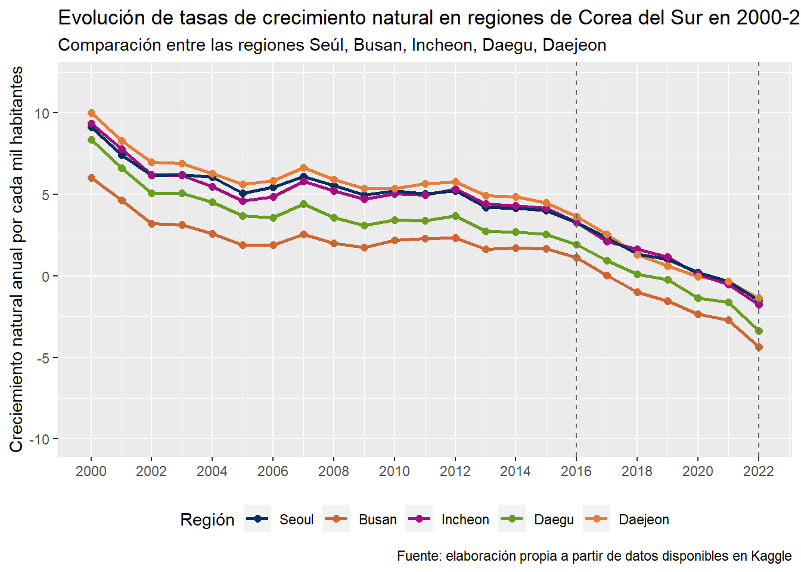

| Descripción de variables a trabajar | ||
| Variables | Tipo | Descripción |
|---|---|---|
| Region | carácter | Ciudad de Corea del Sur |
| Tasa_de_nacimientos | numérico | Número de nacimientos por cada mil habitantes en un año |
| Tasa_de_Fallecimientos | numérico | Número de muertes por cada mil habitantes en un año |
| Tasa_de_divorcios | numérico | Número de divorcios por cada mil habitantes durante un año |
| Tasa_de_casamientos | numérico | Número de casamientos por cada mil habitantes durante un año |
| Tasa_de_crecimiento_natural | numérico | Es el crecimiento o disminución natural expresado en términos relativos al tamaño de la población |
| Año | numérico | Corresponde al año de la fecha en que se registraron los datos |
Desarrollo de la demografía de Corea del Sur durante 2000-2022
Introducción
En la actualidad, algunos países del mundo son mucho más relevantes que otros por tener aspectos como una gran dimensión territorial, poder económico y político y la organización de su sociedad. Una pieza del mundo que dispone con estas características y resalta es el continente asiático, que cuenta con, además de lo anterior, avances tecnológicos, donde los habitantes se ven influenciados beneficiosamente por esto sin perder sus raíces antiguas. Un país a destacar, que pertenece a este territorio, corresponde a Corea del Sur, una de las características es su gran número de habitantes, su cultura conservadora y su gran economía. Si retrocedemos un par de años, esta potencia mundial era totalmente distinta a la que conocemos actualmente, pues no poseía un buen lugar en el ranking del PIB, no era un gran exportador, ni un importador que llamase la atención. Por ende, se puede afirmar que en muy poco tiempo, Corea del Sur es un país que ha logrado tener un gran crecimiento.
Al día de hoy, se puede apreciar la influencia que tiene la economía de este país a nivel mundial. Sin embargo, también existen otros temas de gran interés, tales como el ámbito social y demográfico. Es por esto que es interesante analizar la evolución de Corea del Sur en estos temas, en base a las siguientes preguntas: ¿Qué ha pasado con la población en los últimos 20 años? ¿Han existido otros hechos que han tenido incidencia en la mortalidad y natalidad? ¿Los eventos dentro de un país influyen en la toma de decisiones personales. Como por ejemplo la de casarse? En este proyecto se intentará responder a estas preguntas a través del análisis de los datos obtenidos, los que serán de ayuda para conocer si es que durante este último año, se han presentados diversos patrones e interpretar cómo un hecho histórico afecta a la sociedad de un país.
Con lo dicho anteriormente, los datos que se utilizarán pertenecen a una base de datos correspondiente a la demografía de Corea del Sur, la que almacena variables relativas a cómo han evolucionado a nivel regional, respecto a tópicos como el número de muertes, nacimientos, divorcios y casamientos en los últimos 22 años. Este reporte se enfocará en cinco ciudades con más densidad poblacional del país, con tal de identificar patrones demográficos de este país que han ocurrido, y de esta forma descubrir si existe algún fenómeno que haya afectado o provocaron desequilibrio en los patrones normales. Por ejemplo, se sabe que en 2001 se vió alterada la densidad por inmigración de habitantes de Corea del Norte, por lo que desde ahí hasta el 2022 es probable e interesante saber qué ha ocurrido luego de este hecho y cómo ha cambiado la densidad del país.
El objetivo de este proyecto es conocer cómo se comporta la sociedad dentro de un amplio período de tiempo y cómo ha evolucionado la demografía de esta, enfocándose en una potencia mundial como lo es Corea del Sur. Luego de ver y obtener resultados a través de representaciones del comportamiento de distintas variables, se analizará el contexto histórico en que ocurrieron algunos de estos patrones.
Este trabajo está dividido en cuatro secciones. En la primera se entregará contexto respecto a Corea del Sur y el interés de su evolución demográfica en los últimos años. En segundo lugar, se describirán datos y variables para el análisis del trabajo. Luego, en la tercera, se dará un análisis descriptivo de los patrones de las variables de interés contenidas en la base de datos. Por último, en la cuarta sección, se interpretarán los patrones o resultados de la sección anterior en función de fenómenos históricos que ocurrieron en el período que cubre la base de datos que ocuparemos.
Desarrollo
Base de datos
Debido a que se mencionó anteriormente los recursos y proceso de este proyecto, a continuación se presentará una breve tabla descriptiva de las variables que contiene la base de datos con la que se trabajará en las etapas del proyecto.
Las columnas contiene el nombre de cada variable, su tipo y una breve descripción.
Como podemos ver tenemos distintas variables donde en su mayoría son de tipo numérico.Pues nos enfocaremos en las tasas de naciemiento, fallecimientos, divorcios y matrimonio, y el año de cada registro.
Gráficos y tablas
A continuacion con se expondrán a través de gráficos y una tabla la evolución de estas durante los años 2000 hasta 2022. Cada uno de los esquemas representará el progreso promedio de las tasas por cada año en las ciudades o regiones con mayor población del país a trabajar, las cuales son: Busan, Seúl, Incheon, Daegu y Daejeon.
Ahora, podemos ver la figura 1 la cual presenta la tasa de nacimiento:
Gráfico 1

Al observar le grafico podemos darnos cuenta de que no existe en general un equilibrio de la tasa de nacimiento, pero si se puede decir globalmente que en ambas regiones se presentan las mismas tendencias: aumentan en los mismos años y lo mismo sucede cuando disminuye esta tasa. Si nos fijamos entre 2001 y 2002 existe una disminución de la tasa de nacimientos pues se puede esperar esto por la lucha o guerra contra el terrorismo. Al igual que la disminución entre 2016 a 2020 esto se puede atribuir a cronológicamente a primero en 2016 ocurrió una crisis política a causa de la mandataria, luego de esto comenzó la tensión entre EE. UU. y corea del norte debido a la tensión entre sus presidentes por la supuesta guerra nuclear que se especulaba y la pandemia que comenzó en 2019, lo cual se puede predecir que las personas en consecuencia de circunstancias de incertidumbre sobre el futuro provocara que menos mujeres se sientan inseguras para ser madres.
Gráfico 2

Gráfico 3

Gráfico 4

Gráfico 5

Como vimos anterioremente se puede ver un analisis durante los ultimos 22 años sobre que a pasado en al demografia de Corea y su variacion, pero ¿Como se vio afectado este pais socialmente duante la pandemia?¿Habra afectado como lo hizo en otros paises con los numero sde naciemeientos y muertes?. Para responder esta pregunta mostraremso una tabla que incluye el promedio de cada una de las tasas en el correspondiente año por cada region de Corea.
| Tasas durante la pandemia en regiones de Corea del Sur | |||||
| Tasas | |||||
|---|---|---|---|---|---|
| Tasa_de_nacimientos | Tasa_de_Fallecimientos | Tasa_de_divorcios | Tasa_de_casamientos | Tasa_de_crecimiento_natural | |
| Seoul | |||||
| 2019 | 5.608333 | 4.583333 | 1.783333 | 5.033333 | 1.0250000 |
| 2020 | 4.975000 | 4.783333 | 1.708333 | 4.708333 | 0.2000000 |
| 2021 | 4.800000 | 5.166667 | 1.583333 | 3.908333 | -0.3416667 |
| 2022 | 4.700000 | 6.183333 | 1.416667 | 3.700000 | -1.5166667 |
| Busan | |||||
| 2019 | 5.041667 | 6.575000 | 2.008333 | 4.075000 | -1.5416667 |
| 2020 | 4.491667 | 6.816667 | 1.925000 | 3.591667 | -2.3500000 |
| 2021 | 4.308333 | 7.025000 | 1.891667 | 3.316667 | -2.7083333 |
| 2022 | 4.500000 | 8.833333 | 1.650000 | 3.283333 | -4.3500000 |
| Incheon | |||||
| 2019 | 6.333333 | 5.166667 | 2.441667 | 4.575000 | 1.1583333 |
| 2020 | 5.491667 | 5.366667 | 2.366667 | 3.966667 | 0.1166667 |
| 2021 | 5.125000 | 5.641667 | 2.316667 | 3.725000 | -0.5166667 |
| 2022 | 5.116667 | 6.866667 | 1.983333 | 3.583333 | -1.7500000 |
| Daegu | |||||
| 2019 | 5.433333 | 5.650000 | 1.916667 | 4.066667 | -0.2166667 |
| 2020 | 4.633333 | 5.991667 | 1.808333 | 3.458333 | -1.3583333 |
| 2021 | 4.475000 | 6.083333 | 1.725000 | 3.058333 | -1.6333333 |
| 2022 | 4.483333 | 7.866667 | 1.550000 | 3.116667 | -3.3833333 |
| Daejeon | |||||
| 2019 | 5.725000 | 5.100000 | 2.108333 | 4.483333 | 0.6250000 |
| 2020 | 5.116667 | 5.191667 | 2.058333 | 4.100000 | -0.0500000 |
| 2021 | 5.108333 | 5.466667 | 1.908333 | 3.733333 | -0.3500000 |
| 2022 | 5.333333 | 6.683333 | 1.683333 | 3.933333 | -1.3500000 |
| Fuente: elaboración propia a partir de datos disponibles en Kaggle | |||||